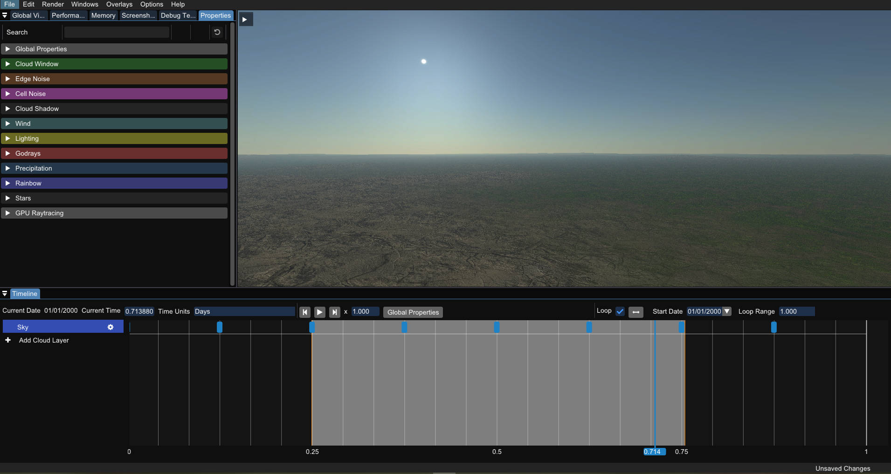
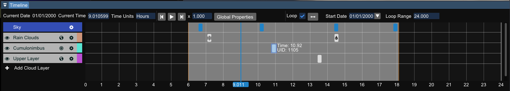
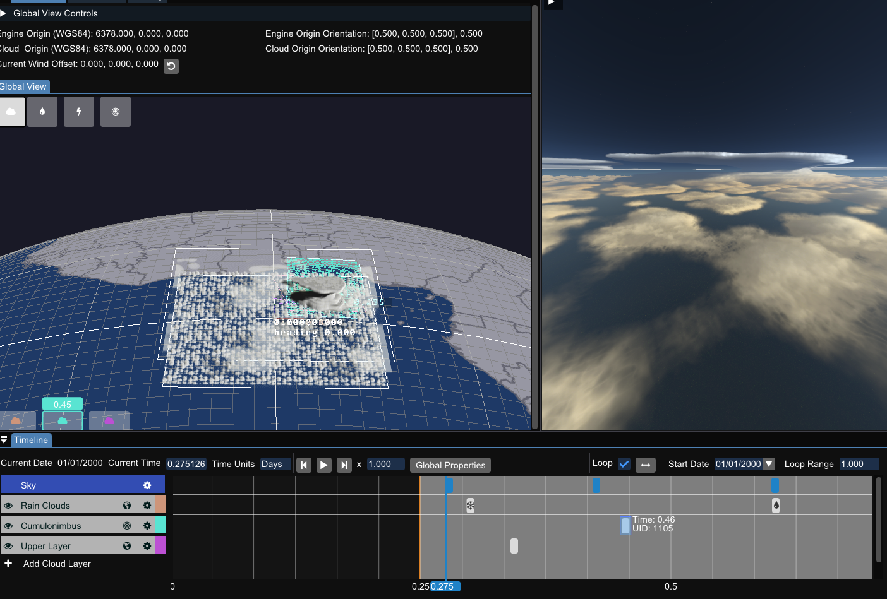

trueSKY Editor¶
The trueSKY Editor is a great place to test, debug or experiment with trueSKY. You can also transfer any sequences you make used to generate .sq files for use within projects that have integrated trueSKY. It features all settings and variables available to trueSKY and
Downloading, Installing and Launching the trueSKY Editor¶
The trueSKY Editor can be downloaded from the downloads section of the website at https:://www.simul.co/downloads.
Once downloaded, please follow the steps in the installer and install into your desired location. The installer will prompt you to launch the editor upon completion.
The location of the trueSKY Editor executable is: [YourInstallLocation]/build/bin/Release/SkySequencer_MD.exe , but there is a shortcut to launch the editor in the base directory.
Presets¶
There are a selection of presets available with the trueSKY Editor. To load these presets navigate to File/Open from the Menu Bar, search for the below path and open one of the provided .sq files. The preset files are found in: [YourInstallLocation]/trueSKYEditor/Presets
Current presets available are:
Cirrocumulus
Cirrus
Clear sky
Cumulus
Fog
StratoCumulus
Stratus
Windows and their functionality¶
By default the editor layout will look like this:

All windows are movable and dockable, and they can be closed if not in use. They can be re-opened simply by navigating to the Window tab from the Menu Bar and selecting the window you wish to re-open.
Timeline¶
The timeline is one of the most important windows in the editor. Here is where you can create, delete and control the clouds in your scene. Cloud Layers and Keyframes on the timeline are used to control when clouds are created, with their properties controlling the individual parameters.

This page explains in more detail trueSKY’s timeline, keyframes and layers.
Properties¶
This shows the properties of the selected keyframe or layer. When no keyframe or layer is selected, it will show the global properties as well as API options and other global settings.

There are three distinct properties sections that are found with the trueSKY Editor:
Keyframe properties, which are accessed by clicking on either a cloud or sky keyframe within the timeline.
Layer properties, which are accessed by clicking on a cloud or sky layer settings button.
Global properties, which are accessed by clicking the Global Properties button.
Certain properties will only be accessible depending on the type of keyframe/layer being used. For example, to see Cloud Region specific settings, your layer will need be a cloud layer region as opposed to a global layer.
Global View¶
Here you can see a view of the whole globe and how your trueSKY sequences are affecting it.

You can select the different view modes at the top of the window to toggle cloud, precipitation, storm and region views.
Performance¶
This shows a breakdown of timings for trueSKY split into GPU and CPU. You can adjust the depth of the breakdown and look through individual function costs. Be aware when adjusting depths that rounding may adjust the total timings.

Screenshot¶
This allows you to take a screenshot of your current scene. You can adjust the resolution, along with the gamma and exposore of the image.
Memory¶
This gives an overview of all the memory being used by trueSKY, and can be sorted by size. This will automatically update when adjusting parameters, so it is a good way to determine what settings will impact your memory usage.
Debug Textures¶
This tab will show all the textures being used to generate your scene, split into multiple sections. This can be really helpful when trying to understand how trueSKY works, and can help debug any issues encountered. There is also a tab for our queries, which will show information about the scene based on specified positions or directions. For example, the lighting queries will display the Sunlight, Moonlight and Ambient light at a given position.
Click here for more information on our debug textures.